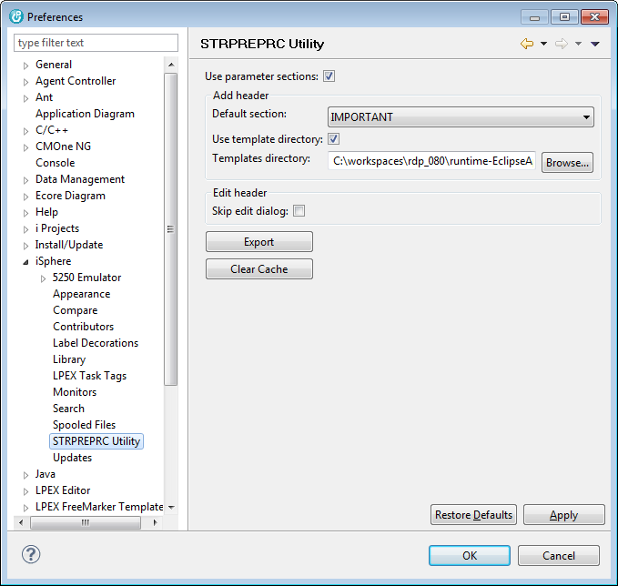

| Use parameter sections | - | Specifies whether to use the 'IMPORTANT', 'COMPILE' and 'LINK' parameter sections. If this option is unchecked, all parameters are added to the base object creation command (CRTCMD-tag). |
| Default section | - | Specifies the parameter section to use for non-standard parameters. This option affects only new headers, added without a template. |
| Use template directory | - | Specifies whether or not to use the templates stored in the specified templates directory. |
| Templates directory | - | Directory where the STRPREPRC header templates are loaded from. |
| Skip edit dialog | - | Specifies whether to skip the edit dialog and prompt the command immediately. |
| Button: Export | - | Exports the embedded example templates to the templates directory. Existing templates are preserved. |
| Button: Clear Cache | - | Clears the template cache to enforce reloading the templates from the templates directory. |